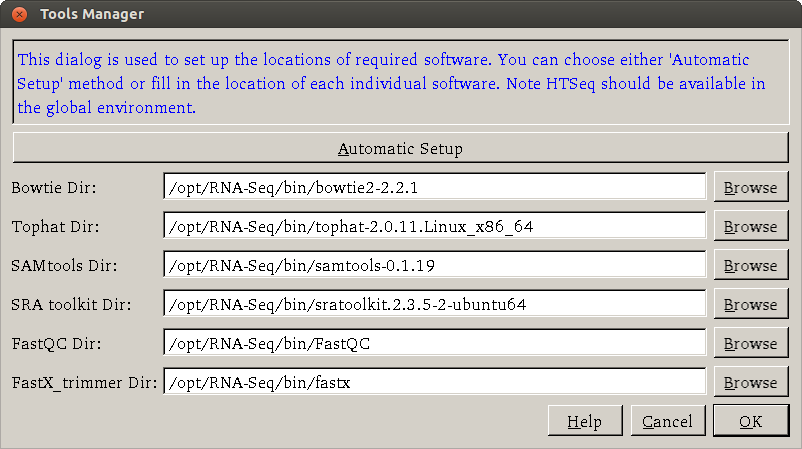
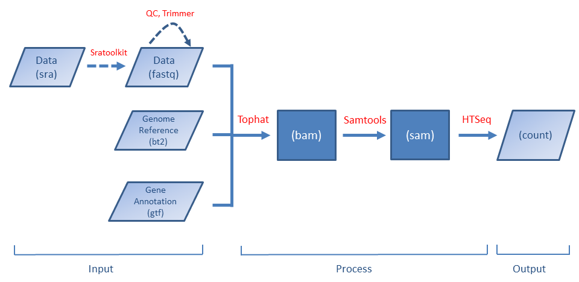

BRB Digital Gene Expression
A simplified RNA-Seq preprocessing tool for gene expression analysis
Welcome to BRB Digital Gene Expression Page
BRB Digital Gene Expression (BRB-DGE) is a new tool to help scientists preprocess RNA-Seq data for downstream gene expression analysis. It takes RNA sequence data files in FASTQ format as an input and outputs raw count data in a text format. The raw count data can be read into BRB-ArrayTools for gene expression analysis. The tool is designed to run in a Linux (we currently only support Ubuntu Linux) environment which includes local physical/virtual machines or remote servers like Amazon cloud. The tool is developed to run RNA-Seq preprocessing based on well-known RNA-Seq tools (Tophat, Samtools and HTSeq). Therefore rather than inventing a new preprocessing tool, we design BRB-DGE as easy-to-use software and hope it can make RNA-Seq preprocessing more accessible to general scientists.
OS & Hardware Requirements
Ubuntu 64-bit Desktop OS (version 12.04 or 14.04) is required in order to run BRB-DGE. The Ubuntu ISO file can be downloaded from Ubuntu Download page.
The recommended hardware requirement may vary depending on the size of data. It is recommended that the machine has at least 8GB of RAM and 500GB hard disk space. Ubuntu OS itself takes about 4.5 GB of hard disk space. BRB-DGE and other required software (Tophat, Bowtie, ...) take less than 400 MB space in total.
Ubuntu Installation
Depending on the machine you have, you can install Ubuntu in different ways. The official installation instruction from Ubuntu provides a step-by-step instruction with screenshots for first-time users.
- New machine without any OS (recommended): After a few simple questions have been answered, Ubuntu will start to install to your computer. The whole process of installation takes about 10-20 minutes depending on your hardware.
- Machine with Ubuntu already installed: If your Ubuntu OS version is at least 12.04, you are fine. There is nothing that has to be changed. If your Ubuntu version is below 12.04, you can follow the instruction on the Ubuntu website to upgrade the OS to the latest version.
- Machine with a non-Ubuntu OS:
If you want to install Ubuntu on a machine with an operating system (such as Windows OS) other than Ubuntu on it, you have two
choices to install Ubuntu.
- Virtual Machine: Using a virtual machine is a great way to try/use a new OS without worrying about messing up the current OS. The new OS (Ubuntu) will be running at the same time as the current OS. Users can create a virtual machine using software called Oracle VirtualBox (open-source) or VMWARE (commercial) under the current OS. More detailed instruction including step-by-step screenshots can be found on .
- Dual Boot (for advanced users): Ubuntu OS can be installed in a way so the current OS will be left untouched. It is similar to the virtual machine method but only one operating system is running at a time. This approach has an advantage of keeping the current OS but it requires more attention at installation. If you plan to do it, please back up your data and/or OS license information before the installation. The steps to install Ubuntu for dual-boot is almost the same as to install Ubuntu for single boot except you have to choose 'Install Ubuntu alongside Windows 7' in the 'Installation type' dialog. After Ubuntu OS is installed, you can choose which OS you want to boot. Warning: BRB does not assume responsibility for loss of data or any other losses that result from installation, upgrading, or updating of the software.
- Since this program is primarily used in a GUI environment, you need to have a graphical environment in your Ubuntu OS. If you choose/already have a server version of Ubuntu, you can still install various desktop environments on your Ubuntu on top of it.
- If you wish to install BRB-DGE on Amazon cloud to take the advantage of the clustering power, please use the command line interface program BDGECLI. See FAQ #5 and #6 below for more information.
- If you already installed BRB-DGE and want to use it remotely from another machine running on Windows OS, the Windows OS needs to have an X11 display server program in order to use BRB-DGE. PuTTy and Xming X server are two standard programs for Windows OS user to remotely run GUI programs located on Linux machines. If you are not familiar with these two programs, google with keywords PuTTy and Xming to find more information.
- If the host machine is also running Windows OS, you may want to check the power option (Windows > Control Panel > Power Options) to make sure it won't go to sleep or hibernate automatically when the Windows OS is idle for a long time (with Ubuntu VM still working).
Download BRB-DGE
(not published, placeholder for now)
The downloaded file is saved under $HOME/Downloads directory by default. For the filename the nomenclature is <bdge-dl-XXXXXXXX.tar.gz> where 'XXXXXXXX' represents the release date; for example, 20141225.
The tarball can be extracted to the desktop or any place under your $HOME directory by using either the file manager (called Nautilus in Ubuntu) or a terminal command (use the keyboard shortcut 'Ctrl+Alt+t' to open a terminal window)
tar -xzvf bdge-dl-XXXXXXXX.tar.gzThis will create a new directory called bdge-dl. This new directory contains the following files
BDGE: GUI version of the applicationBDGECLI: CLI version of the applicationinstall.sh: script to 'install' application icons to the right placessamples.txt: template of samples.txt file (tab-delimited)icon: folder containing application icons
Although it is optional, it is recommended to open a terminal and run ./install.sh as a user to
create a desktop shortcut with the application icon. Note that running install.sh requires sudo privileges; check out
here in FAQ.
Launch
To launch the GUI application, you can do one of the following
- Open the File Manager and go to the directory bdge-dl.
Double click
BDGEfile to launch. -
Open a terminal and go to the directory containing BDGE.
Type
./BDGEto launch. Don't forget the dot and the forward slash when you run an executable from the current directory!
- Double click the BRB-DGE icon
on the Ubuntu desktop (assuming the script
install.shhas been run once).
{kind=link}
Setup of Required Software
There are two ways to set up the required software (such as Bowtie, Tophat, SAMTools, ...): automatic and manual. For novice users, it is recommended to use the automatic setup method. Either way, users first open a dialog by clicking Settings > Tools Manager.
{kind=link}
Automatic method
The automatic setup method provides an easy way to install the required software.
When users click the Automatic setup button, a new terminal window will be opened.
After the sudo password is entered, the application will start to download an installation script
from the internet (which is kept updated) and install the required software.
All the required software is installed under /opt/RNA-Seq/bin directory. Note that if you do not have the sudo password, you need to ask your
system administrator for help. Check out here in FAQ on how to allow an existing user to have root privileges.
After the installation is finished, users will be asked to hit the ENTER key to close the terminal. Now they can go to the main dialog to continue to preprocess their data.
Manual method
If the required software have been previously installed, you can click the Browse button to select the directory for each software (It is assumed HTSeq is available under a global environment so there is no entry for it). After the path of each software has been specified, users can click 'OK' button to proceed processing.
Note that the setup needs only to be run once. The path of each required software will be remembered by BRB-DGE.
Preprocessing 101
The workflow can be represented by the following plot (a dashed line means the step is optional).
{kind=link}
The first-time BRB-DGE is used, you have to download the required software (such as Tophat, Samtools, ...) first. BRB-DGE provides a simple way to do it. Please see the instruction here.
Before launching BRB-DGE, the user needs to create a tab-delimited file called samples.txt to provide sample information required by the software.
The application will automatically run the following programs one by one
based on samples.txt file. More information about samples.txt can be found in the Tutorial section.
Before running the alignment, users are welcomed to run quality control and trimming by using the FastQC and Fastx_trimmer tools. Both tools are available under the 'Tools' menu.
Input/Output
The following files are required as an input (see also Tutorial section)
- Fastq - sequence data
- Reference genome files in bt2 format
- Reference genome file in fa format (optional but recommended)
- Gene annotation file in gtf format
- samples.txt
The output of the program is a zip file "counts.zip" which has as many files as the number of samples (the file name is
determined by the sample name with an extension 'count').
Each file contains a table of read counts for all genes in one sample. There are two columns in the table.
The first column contains gene identifiers such as Ensembl IDs or gene symbols and the second column has count values.
These count table files can be imported into BRB-ArrayTools for gene expression analyses.
Alternatively users can use the DESeqDataSetFromHTSeqCount() function from the DESeq2 package
in Bioconductor or
the readDGE() function from the edgeR package to load COUNT data into an
R environment.
Tutorial
To help first time users gain experience to use the BRB-DGE program, we provide test data which includes all necessary input files.. When you are ready to run BDGE on your own data, check out the Preparing Files and samples.txt sections to make sure all required input files are ready.
Test Data
A subset of RNA sequence data files including genome reference, gene annotation and samples.txt files from GSE11209 can be downloaded from here (~180MB, right click the link and select 'Save Link As...' from the right-click menu to download it). After downloading the zip file, user needs to extract it to some place (e.g. $HOME). User can access the data folder at $HOME/GSE11209-master/. Fastq files are located under $HOME/GSE11209-master directory and the annotation files are under $HOME/GSE11209-master/annotation. It should take less than 5 minutes to run preprocessing on this testing data. Note: be sure to click 'Browse' button for the Annotation Dir and select 'annotation' directory on BRB-DGE program; see the screenshot here.
{kind=link}
Preparing Files
To run RNA-Seq data preprocessing, it is assumed the working directory contains the following files
- Fastq file (*.fastq)
- Reference genome sequence files (*.bt2)
- Reference genome sequence file (*.fa) - optional but recommended
- Genome transcript annotation file (*.gtf)
- samples.txt
The fastq files can be generated from sequencer or public repositories like Sequence Read Archive (SRA). If data is obtained from SRA, the data format is in sra which cannot be directly processed by Tophat program. Therefore the first step is to run a program called fastq-dump to convert the data format from sra to fastq. An example of using fastq-dump command is
/opt/RNA-Seq/bin/sratoolkit.2.3.5-2-ubuntu64/bin/fastq-dump --split-3 SRRXXXXXX.sra
This will create a new file SRRXXXXXX.fastq for single-end data or SRRXXXXXX_1.fastq and SRRXXXXXX_2.fastq for paired-end data. Note that the above command assumes users have run automatic setup tool to install required software. Fastq-dump program is part of SRA ToolKit. The full path to the fastq-dump depends on the SRAToolKit version. See also FAQ #7.
The genome reference file and genome annotation file can be downloaded from Tophat reference genome download page at Tophat website.
Consider, for example, the Homo sapiens genome GRCh37.
After downloading the file Homo_sapiens_Ensembl_GRCh37.tar.gz (17GB), the reference genome files (genome.*.bt2) are
located under Homo_sapiens/Ensembl/GrCh37/Sequence/Bowtie2Index directory and gene annotation file (genes.gtf) is located under
Home_sapiens/Ensembl/GrCh37/Annotation/Archives/ directory.
Please copy these bt2 and gtf files to some directory such as ProjectDir/annotation/ and select this directory for the 'Annotation Dir' on the BRB-DGE program.
If you have an NIH helix/biowulf acccount, you can download the reference genome and annotation files individually from /fdb/igenomes/ directory; see Tophat on Helix.
The samples.txt file contains a table of metadata of sequencing design. More detail about how to prepare samples.txt is given in the next section.
samples.txt
Before starting to run preprocessing, users need to construct a table of sequencing design in a tab-delimited file samples.txt. This file has the following requirement.
The header of samples.txt consists of LibraryName, LibraryLayout, fastq1 and fastq2. Each row represents one sample. The column 'LibraryName' contains a name to uniquely represent the sample. 'LibraryLayout' should be PAIRED or SINGLE. 'fastq1' column contains the fastq filename. Multiple files can be concatenated by comma sign. If the library is paired-end, 'fastq2' column should be specified with a format the same as 'fastq1' column. An example of the samples.txt file is given below:
{kind=link}
This file can be edited using LibreOffice Calc (similar to Microsoft Excel on Windows OS) on Ubuntu by:
- Open Nautilus (File Manager). Copy a template of samples.txt from the
bdge-dlfolder to your working directory. - Right click samples.txt file and select 'Open with Other Application...'.
- Click 'Show other applications' and choose 'LibreOffice Calc'. Press 'Select' button.
- Make sure 'Tab' is checked and 'Comma' is unchecked under 'Separator options' section in the 'Text Import' dialog. Then click 'OK' button.
- Go ahead and modify the file as needed (more information is given below).
- Click File > Save when it is done. If you see a warning message below, you can click 'Use Text CSV Format' to close the message.
- Close LibreOffice by File > Exit.
{kind=link}
As of this writing, the LibreOffice version is 4.3. If you have an earlier version of LibreOffice (3.X), you can install the latest version by checking out LibreOffice website.
Running BDGE
When the necessary files are prepared and the required software have been installed, you are ready to run processing by clicking the big 'Run Preprocessing' button. When the preprocessing is done, you will get a dialog showing a message the preprocessing is finished. You can transfer the output files to Windows OS machines and use BRB-ArrayTools for further gene expression analysis. See FAQ #10 for further help about transferring files.
Command Line Interface
If you need to run the BDGE program in a 'headless' way (without a graphical interface), you can run the command line interface (CLI) version of the program BDGECLI from a terminal. First open a terminal (keyboard binding is Ctrl+Alt+t) and cd to the directory containing BRB-DGE. Executing the following line will start to preprocess the RNA-Seq data.
$ ./BDGECLI DIRECTORY-NAMEwhere DIRECTORY-NAME is the directory name that contains all of your data and related files.
A full list of arguments can be found by adding '-h' argument after the command:
$ ./BDGECLI -h
Name:
BDGECLI - command line interface for RNA-Seq data preprocessing (companion to BDGE program)
Usage: BDGECLI DIRECTORY-NAME [Options]
Options:
-h,--help Show this help message
--annotDir Annotation directory
--outputDir Output directory
--tophatDir Tophat directory
--bowtieDir Bowtie directory
--samtoolsDir Samtools directory
--createScriptOnly Only create the shell script without running it
-v,--version Display version number
Example:
./BDGECLI ~/GSE11209-master --annotDir ~/GSE11209-master/annotation \
--outputDir ~/GSE11209-master/output \
--tophatDir /opt/RNA-Seq/bin/tophat-2.0.11.Linux_x86_64 \
--bowtieDir /opt/RNA-Seq/bin/bowtie2-2.2.1 \
--samtoolsDir /opt/RNA-Seq/bin/samtools-0.1.19
Like the GUI version, the output of the program is a zip file containing the count table for each sample (just like the GUI version).
This program was built using GCC. The executable file should be able to run on most x64 Linux distributions.
If you only want to generate shell scripts without running them immediately, you can use the --createScriptOnly parameter in BDGECLI. This can be useful in a situation that the scripts should be tweaked before being used; e.g. users want to run scripts through the qsub command in a batch system.
FAQ
- How about other Linux distribution or Mac OS? Sorry, no other OS is supported. For other OS, please use BDGECLI program. Even though the code of BRB-DGE can be re-built to work on other OS/Linux distributions, we currently have no hardware resource and time to support other OS/Linux distributions.
- How about more advanced options? Advanced users can open the Settings > Tools Options dialog to specify parameters
for their need. A screenshot of the dialog (default options are shown) is
Options you may want to use include --no-coverage-search or -G in tophat where --no-coverage-search can be used if you see Tophat program is working on searching for junctions via segment mapping and consumes too much memory or time (see a screenshot below) and -G option is used to specify GTF file (eg -G genes.gtf).
The option -s signifies that the data are not from a stranded protocol (this may vary by experiment) and the -a option specifies a minimum score for the alignment quality (i.e. all reads with alignment quality lower than the given minimum value will be skipped). The default is 0 for minimum score.
- How is this program different from Galaxy? Galaxy is a much more complicated system. There may be a big learning curve for general users, not to mention unexpected issues (tools availability/installation/management, upload data, quota limit, ...) when it is used. BRB Digital Gene Expression is a simple application to allow people who have some experience with Unix/Linux to analyze RNA-Seq data without the need of a 'system administrator'.
- Is the program running in parallel? The sequence alignment part in Tophat is most time consuming. So we designed BRB-DGE to run Tophat program in parallel to reduce the run time. By default the number of threads is the total number of CPU cores on the system minus one. Since running Tophat with multithreads requires a significant increase of memory, sometimes the execution may be very slow because lack of memory. In such a case, users can specify '-p' parameter in Tophat program to decrease the number of threads.
- Can the program run on amazon cloud? You bet. Make sure the amazon machine image (AMI) used to create machines is based on 64-bit Ubuntu 12.04 and up.
- Can the program run in a cluster environment? Yes. We have tested BDGECLI in the NIH Biowulf cluster and also Amazon Elastic Computing Cloud (EC2). With basic knowledge of batching system (NIH Biowulf) or Sun Grid Engine queuing system (Amazon Cloud), users can submit multiple jobs to run in parallel on clusters. See Running BDGECLI in Clusters of Computers for more information.
- How to find the Tophat (and other) software version? Assuming required software is installed under the default directory
/opt/RNA-Seq/bin, we can type the following in a Linux terminal to find out each software version:/opt/RNA-Seq/bin/bowtie2-2.2.1/bowtie2 --version # 2.2.1 /opt/RNA-Seq/bin/tophat-2.0.11.Linux_x86_64/tophat2 --version # 2.0.11 /opt/RNA-Seq/bin/samtools-0.1.19/samtools # 0.1.19-44428cd cat /opt/RNA-Seq/bin/HTSeq-0.6.1/VERSION # 0.6.1 /opt/RNA-Seq/bin/sratoolkit.2.3.5-2-ubuntu64/bin/fastq-dump --version # 2.3.5 /opt/RNA-Seq/bin/FastQC/fastqc -v # 0.10.1 /opt/RNA-Seq/bin/fastx/bin/fastx_trimmer -h # 0.0.13
- How come it does not work when I run it on a virtual machine when 'Try Ubuntu' option is used? BRB-DGE works on virtual machine but it does not work under Ubuntu live mode (default option when booting from CD). Live session differs from a regular operating system. It has a very limited file system space and you will get an error when software (Tophat et al) are being installed. So please use 'Install Ubuntu' instead of 'Try Ubuntu'.
- I got an error when I ran install.sh. Running the bash script install.sh requires root privileges.
If you don't have root privileges, you will get the following error when you run install.sh script.
$ ./install.sh [sudo] password for brb: Sorry, user brb is not allowed to execute 'bin/mkdir -p /opt/RNA-Seq/bin/BDGE' as root on brb-VirtualBox.
A simple solution of adding an existing account with root privileges is to run the following terminal command from an account with root privileges,sudo adduser brb sudo
PS. 1. 'brb' has to be replaced with a real user name which does not have sudo privileges yet. 2. The user needs to log out and log in again to see the effect. - OK, I got the count table successfully from BRB-DGE. How do I transfer the count table files to Windows OS for BRB-ArrayTools?
One simple solution is to use a flash drive to copy the zip file from working directory in Ubuntu to a Windows machine.
If you would like a more elegant way to transfer the file, you can download a program called WinSCP
on Windows machines and use it to transfer files between Ubuntu and Windows machines. Before you use WinSCP, you need to know the IP for the
Ubuntu machine. You can easily find out the information by using the ifconfig command on a terminal
ifconfig eth0
where the 'eth0' argument represents the first ethernet adapter. The IP address should have a format XXX.XXX.XXX.XXX. You need to enter the IP address in the 'Host name' entry of a dialog when you create a new connection session on WinSCP. - I got an error when running the Tophat program. What could be the cause of the error? Take a look at the tophat output directories. Look for the file tophat.log. The log file should give you a hint about the problem. For example, if the log file shows an error for fastq record SRRXXXXXX.YYYYYY, check the fastq file SRRXXXXXX.fastq. If the file was copied from another machine or downloaded from the internet, use some tools like md5sum to find out if there is any discrepancy in md5sum values.
- It is the first time for me to use Ubuntu OS. Is there a guide for me to get familiar with Ubuntu OS? One excellent website is Ubuntuguide.org although there are many other useful resources on the internet.
- I still need HELP: Email to arraytools@emmes.com.